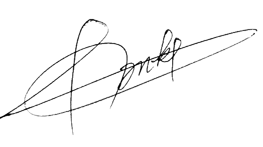

A propos de moi

Je suis un développeur fullstack C# .Net, possédant une double licence en analyse et programmation pour l'informatique de gestion, ainsi qu'une licence en développement d'applications et gestion de projet informatique.
Actuellement, je suis en Master en tant que développeur logiciel pour l'IoT (Internet of Things) et j'occupe le poste de développeur fullstack C# .Net en apprentisage jusqu'en Septembre 2024.
Avec un an d'expérience en tant que chargé de développement web et un autre en tant développeur fullstack, j'ai acquis une solide expertise dans la conception et l'implémentation de solutions logicielles.
J'ai également occupé un rôle de chef de projet, démontrant mes compétences en gestion de projets et en coordination d'équipes.
